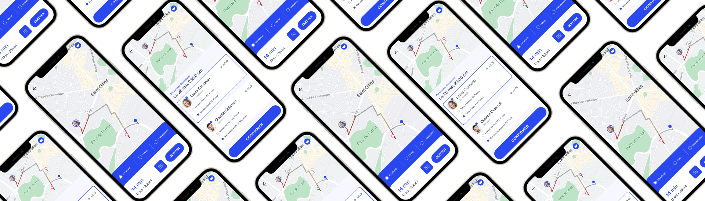
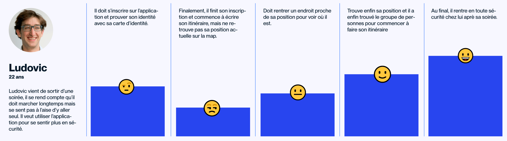
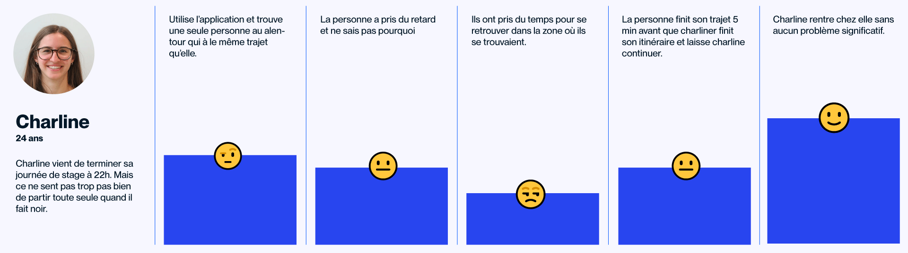
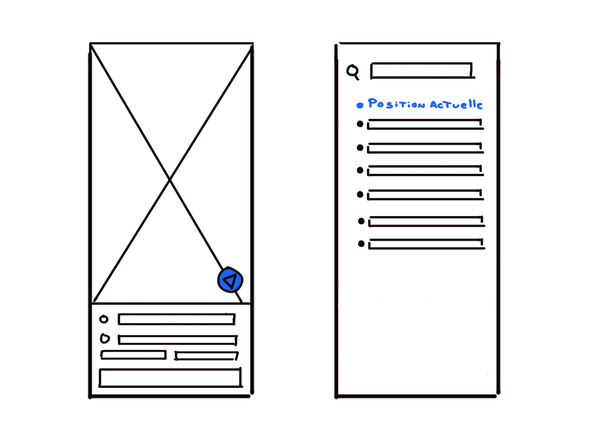
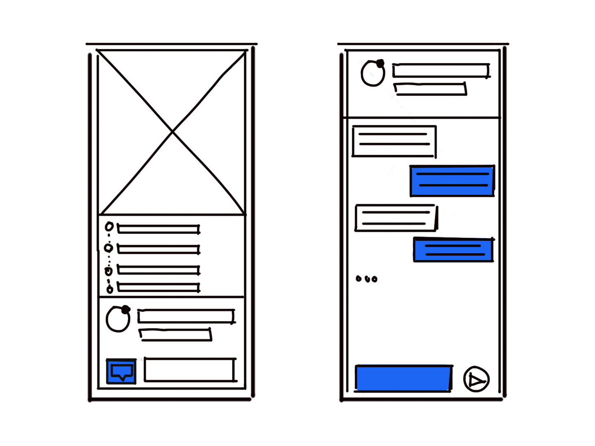

Case study // Tfa
Guardian: Stay Safe Together
Avant-propos
Comme nombreux d’entre nous, je peux constater autour de moi, une certaine difficulté pour rentrer chez soi après une soirée ou n'importe où, sans se faire agresser dans la rue de manière violente ou inappropriée, et qui était souvent subie par les personnes qui ne sont pas accompagnées. J’ai donc commencé à chercher une solution, pour répondre à une question simple:
Comment permettre aux gens de rentrer chez soi en toute sécurité ?
Pivot
En essayant de répondre à ce problème, j’avais premièrement imaginé une carte qui répertorie toutes les zones à risque où il y a beaucoup de criminalité. Et cela permettait aux usagers de pouvoir se créer un itinéraire qui était le plus sûr possible. Avec d’autres fonctionnalités, qui permettent de donner sa position à nos proches ou bien à la police en cas de problèmes.
Mais malheureusement d’autres personnes avaient déjà créé ce concept. J’ai donc dû réfléchir à une possibilité de rester dans le même thème, tout en changeant de fonctionnalité principale. J’ai donc récolté diverses réponses de personnes dans un formulaire, avec ces dernières, j’ai vu un nombre de retours assez conséquents, qui parlait d’être accompagné ou être en groupe comme solution à la problématique.
J’ai donc décidé de concentrer mon pivot sur une application qui permet de mettre les gens en contact pour se rejoindre et s'accompagner mutuellement jusqu’à leur destination en toute sécurité.
Mise en situation
Comme vu ci-dessus, le formulaire m’a permis de regrouper beaucoup d’informations de diverses personnes, telles que sur leur moyenne d’âge, leur peur lors des trajets le soir, leur solution pour la sécurité,etc. Toutes ces données me seront utiles lors de la conception de mon application pour répondre au mieux contre l’insécurité.
Le questionnaire m'a fait découvert que:
- Ils se sentent beaucoup plus en sécurité en groupe et cela permet également de dissuader le plus possible les agresseurs.
- ils se sentent généralement plus à l’aise quand les rues sont plus fréquentées ou encore, des rues qui sont bien éclairées.
- ils se sentent mieux lors de la présence des services de polices ou bien quand ils sont à proximité de commissariat.
Conception
L’application se concentrera donc principalement sur la mise en relation des personnes voulant être accompagnées la nuit.
Cela se fera à travers une map où vous pourrez donner votre trajet, vous pourrez mettre le jour et l’heure, et vous aurez aussi la possibilité de choisir le nombre de personnes que vous voulez. Ce sera soit une seule personne ou bien un groupe de personnes qui sera constitué jusqu’à 4 personnes.
Après avoir mis toutes ces données, l’application Guardian va répertorier toutes les personnes environnantes qui auront le même trajet à effectuer ou en partie. Cela permettra que les personnes soient le moins seul possible lors de l’itinéraire et donc moins de chance de se faire agresser.
On aura un système de match pour que les personnes choisissent les profils avec qui ils veulent être accompagnés et on pourra aussi choisir le nombre de personnes.
User Journey
Pour l’User Journey, j’ai mis en place différentes situations que les usagers pourront rencontrer lors de l’utilisation de l’application. Le but est de voir quels points sont améliorables et comment les modifier.
Pour le premier scénario de Ludovic, on peut remarquer un problème pour se retrouver dans la map. Il a dû chercher sa position sur la map pour se retrouver. Ce qui pourrait être pénible et que ça soit une perte de temps inutile.
Pour le deuxième scénario de Charline, on peut voir un problème pour s’organiser avec la personne qui l’accompagnait. Elle a dû attendre la personne à cause d’un contretemps et on eu du mal pour se retrouver dans la zone de rendez-vous.
Prototype
Avec les prototypes, on va pouvoir appliquer les problèmes qu’on a pu identifier avec les User Journey ci-dessus. Maintenant on va se concentrer sur le cas pratique après avoir mis le doigt sur les différents problèmes trouvés précédemment.
On va donc mettre un bouton sur la map pour permettre à ces gens de trouver leurs positions plus facilement que de devoir chercher leur position exacte sur la map. Et on va ajouter aussi sur la fenêtre de recherche un bouton “Position Actuelle” pour permettre aux personnes de mettre exactement leur position pour l’itinéraire.
Pour Charline, on a remarqué une difficulté logistique pour rejoindre les personnes et de se mettre d’accord sur différents points (position des personnes, temps d'arrivée, etc…
Pour régler ce problème, on va rajouter un système de chats, cela permettra d’avoir une meilleure logistique entre les différentes personnes avant qu’il se voit et permettre d’éviter ce genre d'ennui. On va aussi rajouter le temps à effectuer avant que les personnes puissent se rejoindre. Comme ça les utilisateurs seront mieux organisés entre eux.
Conclusion
Ce travail de fin d’année m’a permis de connaître l’importance des questionnaires dans la réalisation d’un projet. J’ai pu répondre aux besoins des utilisateurs, car ils ont été clairement analysés par ce dernier et j’ai pû optimiser au mieux les fonctionnalités grâce aux User Journey et aux prototypes. Pour finir, je crois savoir maintenant l’importance de cette méthode de travail pour créer une application de A à Z.